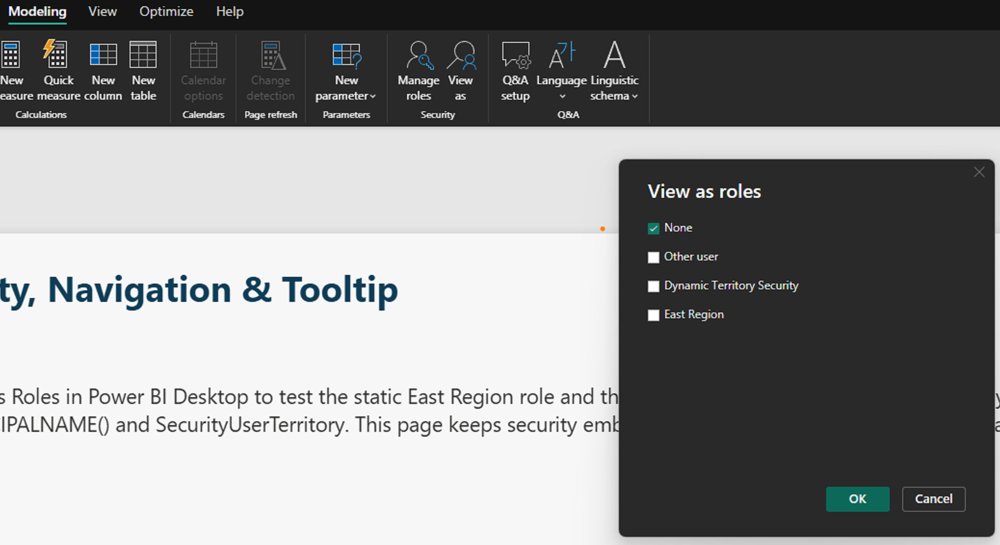

What you will produce
- Static RLS
- Dynamic RLS
Security, Navigation & Tooltiptest page- Role testing evidence
- Security review checklist
Source files
security-user-territory.csv
https://raw.githubusercontent.com/Coding-Forge/PBI-Advanced-Factory/main/data/security/security-user-territory.csvsecurity-role-matrix.csv
https://raw.githubusercontent.com/Coding-Forge/PBI-Advanced-Factory/main/data/security/security-role-matrix.csvStep-by-step walkthrough
- Continue from your Lab 06 report.
- Open Power BI Desktop.
- Open the same Power BI file you completed through Lab 06, from
pbi-local\or your saved workshop solution folder. Keep working in that same file. - Confirm
DimTerritoryandFactSalesalready exist in the model. - Click a territory slicer or territory value on a test page and confirm the sales visuals already respond before you add security.
- Import
security-user-territory.csvfrom the web.- On the Home ribbon, click Get data, then click Web.
- Paste the
security-user-territory.csvURL from the Source files section above, then click OK. - If prompted for authentication, choose Anonymous and click Connect.
- In the Navigator preview, click Transform data.
- In Power Query, rename the query to
SecurityUserTerritory.
- Import
security-role-matrix.csvfrom the web.- In Power Query, click Home > New Source > Web.
- Paste the
security-role-matrix.csvURL from the Source files section, then click OK. - If prompted again, choose Anonymous and click Connect.
- Rename the new query to
SecurityRoleMatrix. - Keep this second table as documentation for expected persona access, even if you do not use it to filter the model directly.
- Confirm the security tables and load them.
Before closing Power Query, make sure the mapping table contains the expected user, territory, and access columns, then click Home > Close & Apply to load the data.
Security item Exact name Configuration Validation Mapping table SecurityUserTerritoryUserPrincipalName,DisplayName,TerritoryKey,TerritoryName,AccessLevelRows loaded from Web URL. Role matrix SecurityRoleMatrixPersona/access documentation table Used as documentation, not filtering. Relationship Security to territory SecurityUserTerritory[TerritoryKey]toDimTerritory[TerritoryKey]Territory filters sales. Test page Security, Navigation & TooltipPage navigator, tester instructions, mapping table, two territory bar charts Page shows the right UPN-to-territory mapping before roles exist. Static role East RegionFilter DimTerritoryto East region or keysOnly East data visible. Dynamic role Dynamic Territory Security[UserPrincipalName] = USERPRINCIPALNAME()Mapped UPN sees expected territories. Service role assignment RLS role membership Assign approved users or groups after publishing Test as role where available. Build permission Semantic model reuse Grant only to approved thin-report or Analyze in Excel users Downstream access risk documented. Sharing and B2B External access path Direct sharing, Apps, workspace access, guest users Verify for Gov and tenant policy documented. OLS/labels/Purview Optional controls Tooling, capacity, MIP/Purview, DLP, export behavior Verify for Gov unless validated. FYI — why the mapping table exists.
SecurityUserTerritoryis the bridge between identity and business data: it tells Power BI whichUserPrincipalNamecan see whichTerritoryKey. KeepingSecurityRoleMatrixas documentation separately helps you explain the intended access model without turning every governance note into an active filter path. - Create the relationship from the security table to the territory dimension.
- Switch to Model view.
- Drag
SecurityUserTerritory[TerritoryKey]ontoDimTerritory[TerritoryKey]. - In the relationship dialog, confirm the relationship is many-to-one from
SecurityUserTerritorytoDimTerritory, then click OK.
FYI — why RLS filters propagate through relationships.
The role does not need a direct filter onFactSalesbecause a filter onDimTerritorycan flow through the existing model relationships to the fact table. If that path is broken, inactive, or modeled in the wrong direction, the role may validate syntactically but still expose unexpected rows. - Build the
Security, Navigation & Tooltippage to hold your test evidence.- Right-click an existing page tab, choose Insert page, and rename the new page
Security, Navigation & Tooltip. - Add a Textbox heading with the bold text
Security, Navigation & Tooltip. - Add a page navigator near the top with Insert > Buttons > Navigator > Page navigator so this page fits into the same navigation pattern as the pages you built in Lab 04.
- Add a Textbox below it with instructions for testers, such as
Use View As Roles in Power BI Desktop to test the static East Region role and the Dynamic Territory Security role driven by USERPRINCIPALNAME() and SecurityUserTerritory. Add alt textInstructions for testing static and dynamic row-level security. - Add a Table visual below the instructions: drag in
SecurityUserTerritory[UserPrincipalName],DimTerritory[TerritoryKey], andDimTerritory[TerritoryName]so testers can see which user maps to which territory before you create any roles. - Add a Bar chart on the right: drag
DimTerritory[TerritoryName]into Y-axis and[Sales Amount],[Gross Margin],[Gross Margin %], and[Quantity]into the values well. - Add a Clustered bar chart below it with the same fields, then add a Moving average line using the built-in analytics feature (select the visual, open the Analytics pane, and click Add next to Trend line or Moving average).
FYI — why build a dedicated page before creating roles.
Thesecurity_tablelets you confirm, at a glance, exactly whichUserPrincipalNamemaps to whichTerritoryNamebefore you flip on View as — so when a role hides data as expected, you already know why. This page keeps security testing embedded in a working report instead of a standalone topic lab; the report-page-tooltip technique itself was already covered when you builtSales Detail Tooltipin Lab 04. - Right-click an existing page tab, choose Insert page, and rename the new page
- Create the static
East Regionrole.- On the Modeling ribbon, click Manage roles.
- Click Create or New, then name the role
East Region. - Select the
DimTerritorytable. - Enter a DAX filter such as
DimTerritory[TerritoryRegion] = "East"or a specific territory-key filter. - Click Save.
FYI — static RLS vs. dynamic RLS.
A static role likeEast Regionis easy to understand and great for a small, fixed audience, but it does not scale well when every territory or persona needs its own role. Dynamic RLS centralizes that logic in data, so you maintain rows inSecurityUserTerritoryinstead of proliferating dozens of nearly identical roles. - Create the dynamic
Dynamic Territory Securityrole.- Stay in Manage roles and click Create again.
- Name the new role
Dynamic Territory Security. - Select the
SecurityUserTerritorytable. - Enter the filter
[UserPrincipalName] = USERPRINCIPALNAME(). - Click Save.
FYI — why
USERPRINCIPALNAME()is the usual dynamic RLS pattern.The function returns the current signed-in identity, so the role filter can match that value againstSecurityUserTerritory[UserPrincipalName]and automatically return only the mapped territories. This keeps one role reusable foralex.manager@contoso.example,casey.lead@contoso.example, and every other approved user without editing DAX per person. - Test both roles in Power BI Desktop.
- Go to your
Security, Navigation & Tooltippage so the mapping table and territory charts are in view. - On the Modeling ribbon, click View as.
- Check the
East Regionrole first, click OK, and confirm only East-region data is visible on the charts. - Open View as again, check
Dynamic Territory Security, and enter a sample UPN fromSecurityUserTerritoryor the answer key below. - Click OK and confirm the charts show only the territories mapped to that user, matching the row you can see in the mapping table.
- Record what data is visible for a one-territory user and for a multi-territory user.

"View as roles" dialog with the dynamic role and test UPN entered. FYI — Desktop testing is necessary, but not the whole story.
View as is the fastest way to prove that the role logic filtersDimTerritoryandFactSalescorrectly, especially for one-territory versus multi-territory users. Still, Service testing matters too because published role assignments, group membership, and identity behavior are enforced there, not just in Desktop. - Go to your
- Document expected access and Build permission decisions.
Use
SecurityRoleMatrixto record which personas should see which territories and whether they should also receive Build permission on the semantic model for thin reports or Analyze in Excel.FYI — why Build permission is a separate decision from RLS.
RLS controls which rows a user can see when they query the model, but Build controls whether they can create new reports, Analyze in Excel, or otherwise reuse that semantic model downstream. A persona may be allowed to view a report safely without being allowed to build new artifacts on top of the same dataset. - Assign and test roles in the Service where available.
- Publish the model only to an approved training workspace.
- Open the semantic model in the Service and go to its Security settings.
- Add the appropriate approved users or security groups to each RLS role.
- Use Test as role if it is available and confirm the Service behavior matches your Desktop tests.
- If Service access is unavailable in this environment, document that as a validation gap instead of implying Service testing was completed.
- Review sharing paths and optional controls.
Compare direct sharing, App distribution, workspace access, and Microsoft Entra B2B guest access as separate decisions, then keep external sharing, B2B, OLS, sensitivity labels, and Microsoft Purview integration marked Verify for Gov unless the customer tenant has explicitly validated them.
FYI — what optional controls add beyond basic RLS.
RLS limits rows, but it does not hide sensitive columns, classify exported data, or automatically satisfy external-sharing policy. That is where controls like OLS, sensitivity labels, Purview, DLP, and B2B governance matter: they address different layers of risk that row filters alone do not solve.
Answer key
Show RLS filter expressions
Use these expressions in Manage roles. Exact table names must match your model.
// Static role option on DimTerritory
DimTerritory[TerritoryRegion] = "East"
// Static role option by territory keys
DimTerritory[TerritoryKey] IN { "T01" }
// Dynamic role filter on SecurityUserTerritory
SecurityUserTerritory[UserPrincipalName] = USERPRINCIPALNAME()
// Useful test UPNs
alex.manager@contoso.example // T01, T02
casey.lead@contoso.example // T03
devon.director@contoso.example // T01, T02, T03, T04
jordan.rep@contoso.example // T04Azure Government note
Use the Gov-ready path by default. Features marked Verify for Gov or Commercial-focused require tenant, licensing, capacity, network, identity, or policy validation before hands-on delivery.